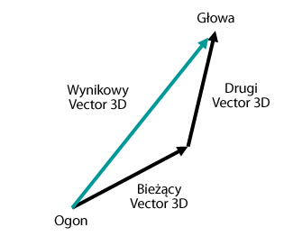
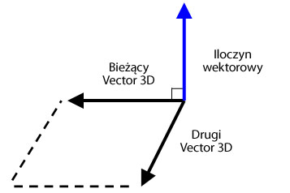

| Pakiet | flash.geom |
| Klasa | public class Vector3D |
| Dziedziczenie | Vector3D |
| Wersja języka: | ActionScript 3.0 |
| Wersje środowiska wykonawczego: | Flash Player 10, AIR 1.5 |
x reprezentuje oś poziomą, a właściwość y reprezentuje oś pionową. W przestrzeni trójwymiarowej właściwość z reprezentuje głębokość. Wartość właściwości x zwiększa się w miarę, jak obiekt przemieszcza się w prawo. Wartość właściwości y zwiększa się w miarę, jak obiekt przemieszcza się w dół. Wartość właściwości z zwiększa się w miarę, jak obiekt oddala się od punktu obserwacji. Dzięki rzutowaniu perspektywicznemu i skalowaniu wyświetlany obiekt jest większy, gdy znajduje się bliżej ekranu, i mniejszy, gdy znajduje się dalej od ekranu. Tak jak w prawoskrętnym trójwymiarowym układzie współrzędnych, dodatnia półoś Z jest skierowana od obserwatora, a wartości właściwości z rosną w miarę, jak obiekt oddala się od obserwatora. Początek układu współrzędnych (0,0,0) przestrzeni globalnej znajduje się w lewym górnym rogu stołu montażowego.

Klasa Vector3D może również reprezentować kierunek, wektor od początku układu współrzędnych, np. (0,0,0), do punkt końcowego; lub składniki zmiennopozycyjne modelu kolorów RGB (czerwony, zielony, niebieski).
W notacji kwaternionowej występuje czwarty element — właściwość w, która zawiera dodatkową informację o orientacji. Właściwość w może na przykład definiować kąt obrotu obiektu Vector3D. Kombinacja kąta obrotu oraz współrzędnych x, y i z może opisywać orientację obiektu wyświetlanego. Oto reprezentacja elementów obiektu Vector3D w notacji macierzowej:

Powiązane elementy interfejsu API
 Ukryj dziedziczone właściwości publiczne
Ukryj dziedziczone właściwości publiczne Pokaż dziedziczone właściwości publiczne
Pokaż dziedziczone właściwości publiczne| Właściwość | Zdefiniowane przez | ||
|---|---|---|---|
 | constructor : Object
Odwołanie do obiektu klasy lub funkcji konstruktora, dotyczące danej instancji obiektu. | Object | |
| length : Number [tylko do odczytu]
Długość bieżącego obiektu Vector3D od punktu początkowego (0,0,,0) do współrzędnych x, y i z obiektu | Vector3D | ||
| lengthSquared : Number [tylko do odczytu]
Kwadrat długości bieżącego obiektu Vector3D obliczony na podstawie właściwości x, y i z. | Vector3D | ||
| w : Number
Czwarty element obiektu Vector3D (obok właściwości x, y i z) może zawierać takie dane, jak kąt obrotu. | Vector3D | ||
| x : Number
Pierwszy element obiektu Vector3D, na przykład współrzędna x punktu w przestrzeni trójwymiarowej. | Vector3D | ||
| y : Number
Drugi element obiektu Vector3D, na przykład współrzędna y punktu w przestrzeni trójwymiarowej. | Vector3D | ||
| z : Number
Trzeci element obiektu Vector3D, na przykład współrzędna z punktu w przestrzeni trójwymiarowej. | Vector3D | ||
| Metoda | Zdefiniowane przez | ||
|---|---|---|---|
Tworzy instancję obiektu Vector3D. | Vector3D | ||
Dodaje wartości elementów x, y i z bieżącego obiektu Vector3D do wartości elementów x, y i z innego obiektu Vector3D. | Vector3D | ||
[statyczny]
Zwraca kąt w radianach między dwoma wektorami. | Vector3D | ||
Zwraca nowy obiekt Vector3D będący dokładną kopią bieżącego obiektu Vector3D. | Vector3D | ||
Kopiuje wszystkie dane wektora ze źródłowego obiektu Vector3D do wywołującego obiektu Vector3D. | Vector3D | ||
Zwraca nowy obiekt Vector3D prostopadły do bieżącego obiektu Vector3D i innego obiektu Vector3D. | Vector3D | ||
Zmniejsza wartość elementów x, y i z bieżącego obiektu Vector3D o wartości elementów x, y i z innego obiektu Vector3D. | Vector3D | ||
[statyczny]
Zwraca odległość między dwoma obiektami Vector3D. | Vector3D | ||
Jeśli bieżący obiekt Vector3D oraz obiekt przekazany jako parametr są wektorami jednostkowymi, metoda zwraca cosinus kąta między tymi wektorami. | Vector3D | ||
Pozwala sprawdzić, czy dwa obiekty Vector3D są równe, porównując elementy x, y i z bieżącego obiektu Vector3D z określonym obiektem Vector3D. | Vector3D | ||
|
Wskazuje, czy dla obiektu zdefiniowano określoną właściwość. | Object | |
Zwiększa wartość elementów x, y i z bieżącego obiektu Vector3D o wartości elementów x, y i z określonego obiektu Vector3D. | Vector3D | ||
|
Wskazuje, czy instancja klasy Object należy do łańcucha prototypów obiektu określonego jako parametr. | Object | |
Porównuje elementy bieżącego obiektu Vector3D z elementami określonego obiektu Vector3D w celu stwierdzenia, czy są one prawie równe. | Vector3D | ||
Odwraca bieżący obiekt Vector3D. | Vector3D | ||
Przekształca obiekt Vector3D w wektor jednostkowy, dzieląc pierwsze trzy elementy (x, y i z) przez długość wektora. | Vector3D | ||
Dzieli wartości właściwości x, y i z bieżącego obiektu Vector3D przez wartość właściwości w. | Vector3D | ||
|
Wskazuje, czy określona właściwość istnieje i jest przeliczalna. | Object | |
Skaluje bieżący obiekt Vector3D o skalarną wielkość. | Vector3D | ||
|
Ustawia dostępność właściwości dynamicznej używanej w pętlach. | Object | |
Ustawia określone wartości elementów obiektu Vector3D.
| Vector3D | ||
Odejmuje wartości elementów x, y i z bieżącego obiektu Vector3D od wartości elementów x, y i z innego obiektu Vector3D. | Vector3D | ||
|
Zwraca ciąg reprezentujący obiekt — sformatowany zgodnie z konwencjami właściwymi dla ustawień regionalnych. | Object | |
Zwraca ciąg znaków reprezentujący bieżący obiekt Vector3D. | Vector3D | ||
|
Zwraca pierwotną wartość dla określonego obiektu. | Object | |
| Stała | Zdefiniowane przez | ||
|---|---|---|---|
| X_AXIS : Vector3D [statyczny]
Oś x zdefiniowana jako obiekt Vector3D ze współrzędnymi (1,0,0). | Vector3D | ||
| Y_AXIS : Vector3D [statyczny]
Oś y zdefiniowana jako obiekt Vector3D ze współrzędnymi (0,1,0). | Vector3D | ||
| Z_AXIS : Vector3D [statyczny]
Oś z zdefiniowana jako obiekt Vector3D ze współrzędnymi (0,0,1). | Vector3D | ||
length | właściwość |
length:Number [tylko do odczytu] | Wersja języka: | ActionScript 3.0 |
| Wersje środowiska wykonawczego: | Flash Player 10, AIR 1.5 |
Długość bieżącego obiektu Vector3D od punktu początkowego (0,0,,0) do współrzędnych x, y i z obiektu Właściwość w jest ignorowana. Wektor jednostkowy ma długość równą jeden.
Implementacja
public function get length():NumberPowiązane elementy interfejsu API
lengthSquared | właściwość |
lengthSquared:Number [tylko do odczytu] | Wersja języka: | ActionScript 3.0 |
| Wersje środowiska wykonawczego: | Flash Player 10, AIR 1.5 |
Kwadrat długości bieżącego obiektu Vector3D obliczony na podstawie właściwości x, y i z. Właściwość w jest ignorowana. Zawsze, gdy jest to możliwe, należy używać metody lengthSquared() zamiast wywoływać powolną metodę Math.sqrt() z metody Vector3D.length().
Implementacja
public function get lengthSquared():NumberPowiązane elementy interfejsu API
w | właściwość |
public var w:Number| Wersja języka: | ActionScript 3.0 |
| Wersje środowiska wykonawczego: | Flash Player 10, AIR 1.5 |
Czwarty element obiektu Vector3D (obok właściwości x, y i z) może zawierać takie dane, jak kąt obrotu. Wartością domyślną jest 0.
W notacji kwaternionowej kąt jest czwartym elementem używanym w obliczeniach obrotów w przestrzeni trójwymiarowej. Właściwość w może służyć do definiowania kąta obrotu wokół obiektu Vector3D. Kombinacja kąta obrotu i współrzędnych (x,y,z) wyznacza orientację obiektu wyświetlanego.
Ponadto właściwość w może być używana jako współczynnik zniekształcenia perspektywicznego dla rzutowanego położenia w przestrzeni trójwymiarowej lub jako wartość transformacji rzutu w reprezentacji trójwymiarowej współrzędnej rzutowanej na przestrzeń dwuwymiarową. Można na przykład utworzyć macierz rzutowania, korzystając z właściwości Matrix3D.rawData, która to macierz po zastosowaniu do obiektu Vector3D wygeneruje wartość transformacji w czwartym elemencie (właściwości w) obiektu Vector3D. Dzielenie pozostałych elementów obiektu Vector3D przez wartość transformacji da w wyniku rzutowany obiekt Vector3D. Metoda Vector3D.project() może posłużyć do podzielenia pierwszych trzech elementów obiektu Vector3D przez jego czwarty element.
Powiązane elementy interfejsu API
x | właściwość |
public var x:Number| Wersja języka: | ActionScript 3.0 |
| Wersje środowiska wykonawczego: | Flash Player 10, AIR 1.5 |
Pierwszy element obiektu Vector3D, na przykład współrzędna x punktu w przestrzeni trójwymiarowej. Wartością domyślną jest 0.
y | właściwość |
public var y:Number| Wersja języka: | ActionScript 3.0 |
| Wersje środowiska wykonawczego: | Flash Player 10, AIR 1.5 |
Drugi element obiektu Vector3D, na przykład współrzędna y punktu w przestrzeni trójwymiarowej. Wartością domyślną jest 0.
z | właściwość |
public var z:Number| Wersja języka: | ActionScript 3.0 |
| Wersje środowiska wykonawczego: | Flash Player 10, AIR 1.5 |
Trzeci element obiektu Vector3D, na przykład współrzędna z punktu w przestrzeni trójwymiarowej. Wartością domyślną jest 0.
Vector3D | () | Konstruktor |
public function Vector3D(x:Number = 0., y:Number = 0., z:Number = 0., w:Number = 0.)| Wersja języka: | ActionScript 3.0 |
| Wersje środowiska wykonawczego: | Flash Player 10, AIR 1.5 |
Tworzy instancję obiektu Vector3D. Jeśli konstruktor zostanie wywołany bez parametrów, tworzony jest obiekt Vector3D z elementami (0,0,0,0).
Parametryx:Number (default = 0.) | |
y:Number (default = 0.) | |
z:Number (default = 0.) | |
w:Number (default = 0.) |
add | () | metoda |
public function add(a:Vector3D):Vector3D| Wersja języka: | ActionScript 3.0 |
| Wersje środowiska wykonawczego: | Flash Player 10, AIR 1.5 |
Dodaje wartości elementów x, y i z bieżącego obiektu Vector3D do wartości elementów x, y i z innego obiektu Vector3D. Metoda add() nie zmienia bieżącego obiektu Vector3D. Zwraca natomiast nowy obiekt Vector3D z nowymi wartościami.
Wynik dodania dwóch wektorów jest wektorem wynikowym. Jednym ze sposobów zwizualizowania wyniku jest narysowanie wektora od początku lub końca pierwszego wektora do końca lub początku drugiego wektora. Wynikowy wektor jest odległością między punktem początkowym pierwszego wektora a punktem końcowym drugiego wektora.

Parametry
a:Vector3D — Obiekt Vector3D, który ma zostać dodany do bieżącego obiektu Vector3D.
|
Vector3D — Bieżący obiekt Vector3D będący wynikiem dodania bieżącego obiektu Vector3D do innego obiektu Vector3D.
|
Powiązane elementy interfejsu API
angleBetween | () | metoda |
public static function angleBetween(a:Vector3D, b:Vector3D):Number| Wersja języka: | ActionScript 3.0 |
| Wersje środowiska wykonawczego: | Flash Player 10, AIR 1.5 |
Zwraca kąt w radianach między dwoma wektorami. Zwrócona wartość to najmniejszy kąt (w radianach), o jaki należy obrócić obiekt Vector3D, aby stał się równoległy do drugiego obiektu Vector3D.
Metoda angleBetween() jest metodą statyczną. Można użyć jej bezpośrednio jako metody klasy Vector3D.
Aby przeliczyć stopnie na radiany, można skorzystać z następującego wzoru:
radian = Math.PI/180 * degree
Parametry
a:Vector3D — Pierwszy obiekt Vector3D.
| |
b:Vector3D — Drugi obiekt Vector3D.
|
Number — Kąt między dwoma obiektami Vector3D.
|
clone | () | metoda |
copyFrom | () | metoda |
public function copyFrom(sourceVector3D:Vector3D):void| Wersja języka: | ActionScript 3.0 |
| Wersje środowiska wykonawczego: | Flash Player 11, AIR 3.0, Flash Lite 4 |
Kopiuje wszystkie dane wektora ze źródłowego obiektu Vector3D do wywołującego obiektu Vector3D.
Parametry
sourceVector3D:Vector3D — Obiekt Vector3D, z którego należy skopiować dane.
|
crossProduct | () | metoda |
public function crossProduct(a:Vector3D):Vector3D| Wersja języka: | ActionScript 3.0 |
| Wersje środowiska wykonawczego: | Flash Player 10, AIR 1.5 |
Zwraca nowy obiekt Vector3D prostopadły do bieżącego obiektu Vector3D i innego obiektu Vector3D. Jeśli współrzędne zwróconego obiektu Vector3D są równe (0,0,0), to dwa obiekty Vector3D są wzajemnie równoległe.

Można wykorzystać znormalizowany iloczyn wektorowy dwóch wektorów wieloboku i znormalizowanego wektora kamery lub obserwatora w celu uzyskania iloczynu skalarnego. Wartość produktu skalarnego pozwala stwierdzić, czy powierzchnia obiektu trójwymiarowego jest widoczna z punktu obserwacji.
Parametry
a:Vector3D — Drugi obiekt Vector3D.
|
Vector3D — Nowy obiekt Vector3D, który jest prostopadły do bieżącego obiektu Vector3D i obiektu Vector3D przekazanego jako parametr.
|
Powiązane elementy interfejsu API
decrementBy | () | metoda |
public function decrementBy(a:Vector3D):void| Wersja języka: | ActionScript 3.0 |
| Wersje środowiska wykonawczego: | Flash Player 10, AIR 1.5 |
Zmniejsza wartość elementów x, y i z bieżącego obiektu Vector3D o wartości elementów x, y i z innego obiektu Vector3D. W przeciwieństwie do metody Vector3D.subtract(), metoda decrementBy() zmienia bieżący obiekt Vector3D, a nie zwraca nowego obiektu Vector3D.
Parametry
a:Vector3D — Obiekt Vector3D zawierający wartości, które należy odjąć od bieżącego obiektu Vector3D.
|
Powiązane elementy interfejsu API
distance | () | metoda |
public static function distance(pt1:Vector3D, pt2:Vector3D):Number| Wersja języka: | ActionScript 3.0 |
| Wersje środowiska wykonawczego: | Flash Player 10, AIR 1.5 |
Zwraca odległość między dwoma obiektami Vector3D. Metoda distance() jest metodą statyczną. Można jej używać bezpośrednio jako metody klasy Vector3D w celu uzyskania odległości euklidesowej między dwoma punktami w przestrzeni trójwymiarowej.
Parametry
pt1:Vector3D — Obiekt Vector3D będący pierwszym punktem trójwymiarowym.
| |
pt2:Vector3D — Obiekt Vector3D będący drugim punktem trójwymiarowym.
|
Number — Odległość między dwoma obiektami Vector3D.
|
dotProduct | () | metoda |
public function dotProduct(a:Vector3D):Number| Wersja języka: | ActionScript 3.0 |
| Wersje środowiska wykonawczego: | Flash Player 10, AIR 1.5 |
Jeśli bieżący obiekt Vector3D oraz obiekt przekazany jako parametr są wektorami jednostkowymi, metoda zwraca cosinus kąta między tymi wektorami. Wektory jednostkowe to wektory wskazujące w tym samym kierunku, których długość wynosi jeden. Użycie wektorów jednostkowych powoduje, że długości nie mają wpływu na wyniki. Metoda normalize() umożliwia przekształcenie wektora w wektor jednostkowy.
Metoda dotProduct() znajduje kąt między dwoma wektorami. Jest także wykorzystywana w wybieraniu powierzchni i obliczeniach oświetlenia. Wybieranie powierzchni to procedura określania, które powierzchnie są niewidoczne dla obserwatora. Do uzyskania iloczynu skalarnego można wykorzystać znormalizowane wektory z punktu kamery lub obserwacji i iloczynu wektorowego wierzchołków wieloboku. Jeśli iloczyn skalarny jest ujemny, powierzchnia jest zwrócona do kamery lub obserwatora. Jeśli dwa wektory jednostkowe są prostopadłe do siebie, to są ortogonalne, a ich iloczyn skalarny jest równy zero. Jeśli dwa wektory są równoległe, ich iloczyn skalarny jest równy jeden.
Parametry
a:Vector3D — Drugi obiekt Vector3D.
|
Number — Iloczyn skalarny bieżącego obiektu Vector3D i określonego obiektu Vector3D.
|
Powiązane elementy interfejsu API
equals | () | metoda |
public function equals(toCompare:Vector3D, allFour:Boolean = false):Boolean| Wersja języka: | ActionScript 3.0 |
| Wersje środowiska wykonawczego: | Flash Player 10, AIR 1.5 |
Pozwala sprawdzić, czy dwa obiekty Vector3D są równe, porównując elementy x, y i z bieżącego obiektu Vector3D z określonym obiektem Vector3D. Jeśli wartości tych elementów są równe, dwa obiekty Vector3D uznaje się za równe. Jeśli drugi opcjonalny parametr ma wartość true, porównywane są wszystkie cztery elementy obiektów Vector3D, w tym właściwość w.
Parametry
toCompare:Vector3D — Obiekt Vector3D, który ma być porównywany z bieżącym obiektem Vector3D.
| |
allFour:Boolean (default = false)w obiektów Vector3D powinna być uwzględniana w porównaniach.
|
Boolean — Wartość true, jeśli obiekt Vector3D jest równy bieżącemu obiektowi Vector3D; false, jeśli obiekty nie są równe.
|
Powiązane elementy interfejsu API
incrementBy | () | metoda |
public function incrementBy(a:Vector3D):void| Wersja języka: | ActionScript 3.0 |
| Wersje środowiska wykonawczego: | Flash Player 10, AIR 1.5 |
Zwiększa wartość elementów x, y i z bieżącego obiektu Vector3D o wartości elementów x, y i z określonego obiektu Vector3D. W przeciwieństwie do metody Vector3D.add(), metoda incrementBy() zmienia bieżący obiekt Vector3D, a nie zwraca nowego obiektu Vector3D.
Parametry
a:Vector3D — Obiekt Vector3D, który ma zostać dodany do bieżącego obiektu Vector3D.
|
Powiązane elementy interfejsu API
nearEquals | () | metoda |
public function nearEquals(toCompare:Vector3D, tolerance:Number, allFour:Boolean = false):Boolean| Wersja języka: | ActionScript 3.0 |
| Wersje środowiska wykonawczego: | Flash Player 10, AIR 1.5 |
Porównuje elementy bieżącego obiektu Vector3D z elementami określonego obiektu Vector3D w celu stwierdzenia, czy są one prawie równe. Dwa obiekty Vector3D są prawie równe, jeśli wartości wszystkich elementów dwóch wektorów są równe lub wynik porównania mieści się w zakresie tolerancji. Różnica między dwoma elementami musi być mniejsza niż wartość parametru tolerance. Jeśli trzeci opcjonalny parametr ma wartość true, porównywane są wszystkie cztery elementy obiektów Vector3D, w tym właściwości w. W przeciwnym razie porównywane są tylko elementy x, y i z.
Parametry
toCompare:Vector3D — Obiekt Vector3D, który ma być porównywany z bieżącym obiektem Vector3D.
| |
tolerance:Number — Liczba określająca współczynnik tolerancji. Jeśli różnica między elementem obiektu Vector3D określonego w parametrze toCompare a elementem bieżącego obiektu Vector3D jest mniejsza niż tolerance, te dwie wartości są uznawane za prawie równe.
| |
allFour:Boolean (default = false)w obiektów Vector3D powinna być uwzględniana w porównaniach.
|
Boolean — Wartość true, jeśli obiekt Vector3D jest prawie równy bieżącemu obiektowi Vector3D; false, jeśli obiekty nie są równe.
|
Powiązane elementy interfejsu API
negate | () | metoda |
public function negate():void| Wersja języka: | ActionScript 3.0 |
| Wersje środowiska wykonawczego: | Flash Player 10, AIR 1.5 |
Odwraca bieżący obiekt Vector3D. Obiekt odwrócony jest także traktowany jako przeciwny do obiektu oryginalnego. Wartości właściwości x, y i z bieżącego obiektu Vector3D są zmieniane na -x, -y i -z.
normalize | () | metoda |
public function normalize():Number| Wersja języka: | ActionScript 3.0 |
| Wersje środowiska wykonawczego: | Flash Player 10, AIR 1.5 |
Przekształca obiekt Vector3D w wektor jednostkowy, dzieląc pierwsze trzy elementy (x, y i z) przez długość wektora. Wektory jednostkowe to wektory, które mają określony kierunek i zwrot, ale ich długość zawsze wynosi jeden. Upraszczają obliczenia wektorowe, eliminując wpływ długości na wynik.
ZwracaNumber — Długość bieżącego obiektu Vector3D.
|
project | () | metoda |
public function project():void| Wersja języka: | ActionScript 3.0 |
| Wersje środowiska wykonawczego: | Flash Player 10, AIR 1.5 |
Dzieli wartości właściwości x, y i z bieżącego obiektu Vector3D przez wartość właściwości w.
Jeśli bieżący obiekt Vector3D jest wynikiem mnożenia obiektu Vector3D przez obiekt Matrix3D rzutowania, właściwość w może zawierać wartość transformacji. Wówczas metoda project() może ukończyć rzutowanie, dzieląc elementy przez właściwość w. Do utworzenia obiektu Matrix3D można użyć właściwości Matrix3D.rawData.
scaleBy | () | metoda |
public function scaleBy(s:Number):void| Wersja języka: | ActionScript 3.0 |
| Wersje środowiska wykonawczego: | Flash Player 10, AIR 1.5 |
Skaluje bieżący obiekt Vector3D o skalarną wielkość. Elementy x, y i z obiektu Vector3D są mnożone przez liczbę skalarną określoną w parametrze. Na przykład wynikiem przeskalowania wektora o wartość dziesięć będzie wektor dziesięciokrotnie dłuższy. Skalar może także wpływać na zwrot wektora. Pomnożenie wektora przez liczbę ujemną spowoduje odwrócenie jego zwrotu.
Parametry
s:Number — Mnożnik (skalar) używany do skalowania obiektu Vector3D.
|
setTo | () | metoda |
public function setTo(xa:Number, ya:Number, za:Number):void| Wersja języka: | ActionScript 3.0 |
| Wersje środowiska wykonawczego: | Flash Player 11, AIR 3.0, Flash Lite 4 |
Ustawia określone wartości elementów obiektu Vector3D.
Parametry
xa:Number — Wartości, które należy ustawić dla wektora.
| |
ya:Number | |
za:Number |
subtract | () | metoda |
public function subtract(a:Vector3D):Vector3D| Wersja języka: | ActionScript 3.0 |
| Wersje środowiska wykonawczego: | Flash Player 10, AIR 1.5 |
Odejmuje wartości elementów x, y i z bieżącego obiektu Vector3D od wartości elementów x, y i z innego obiektu Vector3D. Metoda subtract() nie zmienia bieżącego obiektu Vector3D. Zwraca natomiast nowy obiekt Vector3D z nowymi wartościami.
Parametry
a:Vector3D — Obiekt Vector3D, który ma zostać odjęty od bieżącego obiektu Vector3D.
|
Vector3D — Nowy obiekt Vector3D będący różnicą między bieżącym obiektem Vector3D a określonym obiektem Vector3D.
|
Powiązane elementy interfejsu API
toString | () | metoda |
public function toString():String| Wersja języka: | ActionScript 3.0 |
| Wersje środowiska wykonawczego: | Flash Player 10, AIR 1.5 |
Zwraca ciąg znaków reprezentujący bieżący obiekt Vector3D. Ciąg znaków zawiera wartości właściwości x, y i z.
String — Ciąg znaków zawierający wartości właściwości x, y i z.
|
X_AXIS | Stała |
public static const X_AXIS:Vector3D| Wersja języka: | ActionScript 3.0 |
| Wersje środowiska wykonawczego: | Flash Player 10, AIR 1.5 |
Oś x zdefiniowana jako obiekt Vector3D ze współrzędnymi (1,0,0).
Y_AXIS | Stała |
public static const Y_AXIS:Vector3D| Wersja języka: | ActionScript 3.0 |
| Wersje środowiska wykonawczego: | Flash Player 10, AIR 1.5 |
Oś y zdefiniowana jako obiekt Vector3D ze współrzędnymi (0,1,0).
Z_AXIS | Stała |
public static const Z_AXIS:Vector3D| Wersja języka: | ActionScript 3.0 |
| Wersje środowiska wykonawczego: | Flash Player 10, AIR 1.5 |
Oś z zdefiniowana jako obiekt Vector3D ze współrzędnymi (0,0,1).
Tue Jun 12 2018, 12:06 PM Z